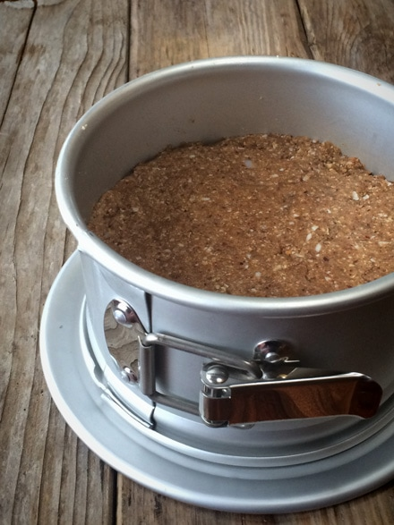
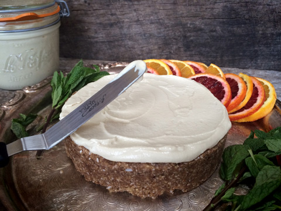
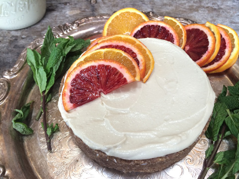
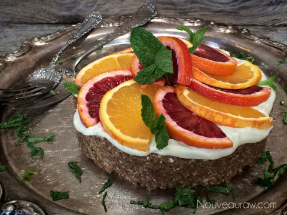
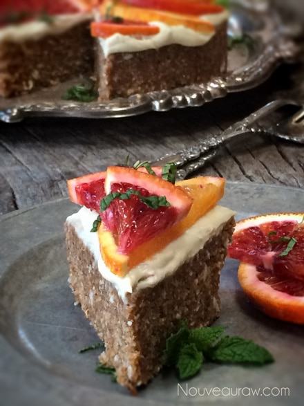

Blood Orange Pecan Date Cake

~ raw, vegan, gluten-free ~
It’s not very often that the end flavor of a recipe surprises me. When I am creating recipes in my head, I have a pretty good idea about the outcome. This cake was no different until I took a bite of it. I was pleasantly surprised with the combination of the depth of cardamon, the warmth of the pecans, and the freshness of citrus. The cake turned out so refreshing and light tasting.
I have been slowly working on creating more recipes that don’t require dehydration. Not because I am impatient, but because I am thinking of you. This recipe can be made in stages. The base of the cake can be made and frozen well ahead of time.
The frosting will last about 3-5 days. I don’t recommend assembling the cake until the day of serving. But only because we are dealing with fresh fruit on top, which will release some juice and cause a little discoloration of the frosting.
Speaking of fruit, you could use just about any fruit that is in season; I will say however that the blood orange/orange flavors were quite amazing when paired with this cake.
Blood oranges get their name from the “bloody” pigment found within the fruit called anthocyanin which is widely found in the plant kingdom. It appears as the red found in cherries, red cabbage, as well as the blue in blueberries and even purple found in pansies and eggplants. That all sounds fine and dandy, but what the heck is anthocyanin?
Anthocyanin is a powerful antioxidant and studies show that it can slow or prevent the growth of cancer cells–and even kill them. Blood oranges also contain high amounts of Vitamin C, potassium, Vitamin A, iron, calcium, and even fiber.
The blood oranges originated in Sicily and Spain. I would just love to visit a blood orange orchard. (hint hint). These days they are grown in the United States, Texas, and California. But I think it would great to see exactly where they originated. (hint hint). hehe
Yields 6” cake round
Dry ingredients:
Wet Ingredients:
- 1/2 cup Medjool date paste
- 2 Tbsp cold-pressed coconut oil, melted
- 1/4 cup raw agave or coconut nectar
- 1 tsp vanilla extract
Frosting:
Garnish:
- Blood orange/orange slices
- Fresh mint
Preparation:
Cake:
- Place the pecans in the food processor, fitted with the “S” blade, and pulse into a small crumble.
- Add the almond flour, coconut flour, psyllium, cardamom, cinnamon, and salt. Pulse together, so everything gets well dispersed. Pour into a medium-sized bowl.
- Add the date paste, coconut oil, sweetener, and vanilla. With your hands mix everything together.
- Place the batter in a 6” Springform pan. If you don’t have one, line a regular baking pan with plastic wrap before adding the dough. This will make it easier to remove. Press the batter firmly and evenly into the pan. No dehydration is required. Place in the fridge or freezer until you make the frosting is ready to frost with.
Frosting:
- Create the frosting and slide it into the fridge for 4+ hours to firm up. You can use it right away, but it will be quite soft.
- Spread a layer of frosting on top of the cake. You can frost the sides as well, but I liked the rustic look, exposing the texture of the cake.
Garnish:
- Top the cake with slices of blood oranges and pop in a few springs of mint. See photos below.
- I suggest decorating the cake, the day you plan on serving it. The oranges will release juice into the frosting if left unattended too long. :)
Press the cake batter firmly and evenly into a 6” pan.

Make the Raw Coconut Orange Whipped Cream Frosting.

Spread a layer of frosting on top of the cake. You can decorate the sides if you wish.
I loved the rustic feel, showcasing the texture of the Pecan Date Cake.

Cut thin slices of oranges, then cut in half. Fan the slices around the cake.

Poke a few sprigs of mint around the cake and enjoy.


© AmieSue.com